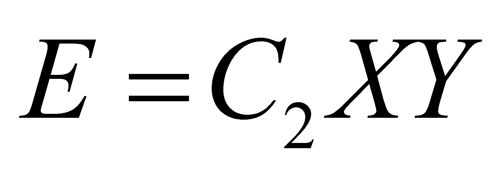
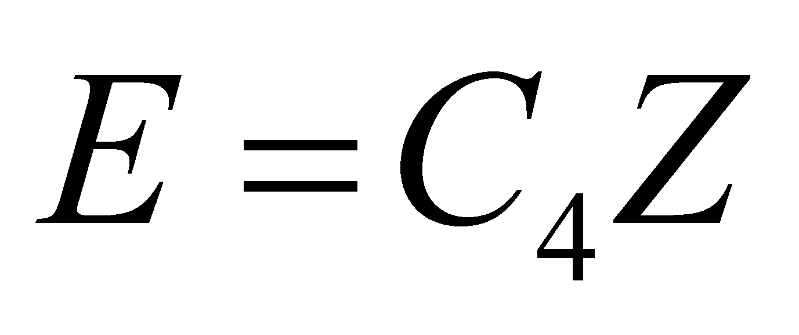
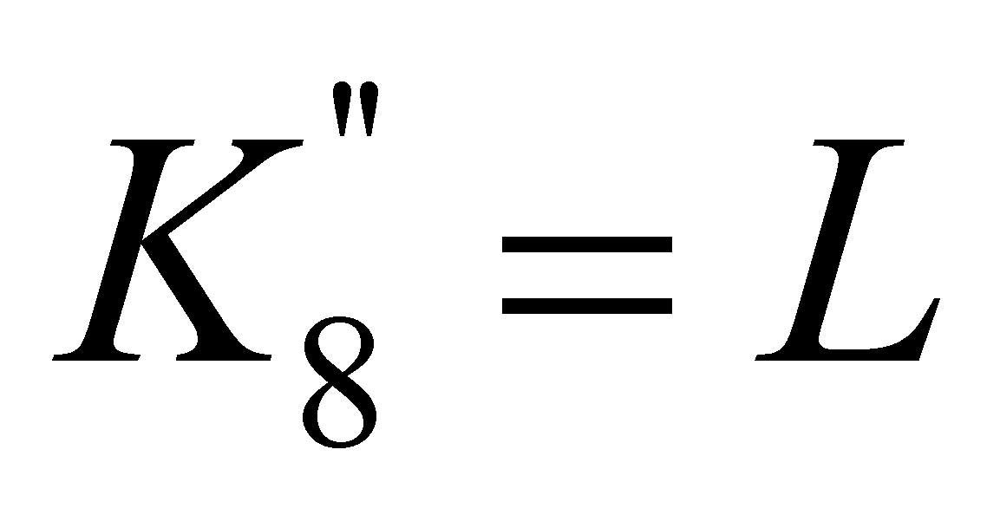
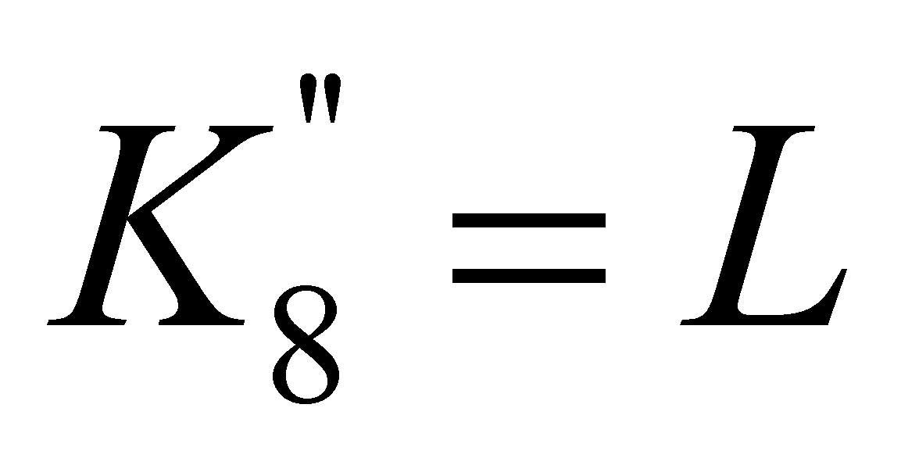
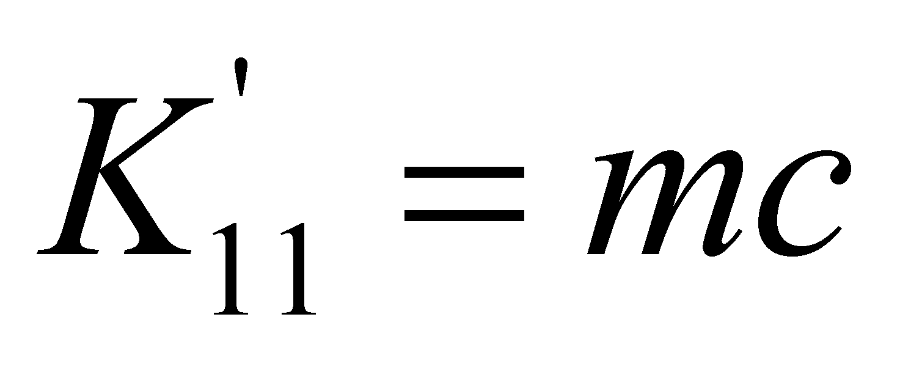

|
|
|
Only few relevant computing relations of the energy were mentioned in the previous section, their number being much higher in the technical-scientific literature. However, by considering this reduced number of relations, the existence of several relations classes may be easily observed.
The first class of the energy’s calculus relations includes relations such as:
(7.6.4.2.1)
in which X is the energy state attribute. This class may also include relations such as:
 (7.6.4.2.2)
because the state attributes X and Y are interrelated, which means that Y=C3X. C1, C2 and C3 are considered to be constants. The qualitative attributes X and Y have existential attributes which ranges from zero (non-existence) to a value different from zero, and, as a result of this variation, an energy accumulation (stockpile) is generated, which is placed in a specific volume.
Another class of relations used for the energy calculus comprises relations such as:
 (7.6.4.2.3)
where Z is also an energy state attribute.
According to the analysis of the above-mentioned energy’s calculus relations, there are few remarks which can be made:
The first remark on the energy’s computing relations is that, that particular energy is stored into a material medium:
In case of the kinetic energy, we are dealing with a medium having a mass density from the volume V of the moving object;
In case of the
electric energy, we are dealing with the medium having a dielectric
constant
 and a volume V
placed between the capacitor’s electrodes;
and a volume V
placed between the capacitor’s electrodes;
As for the magnetic energy, we are dealing with a medium having a magnetic permeability μ and a volume V in which the magnetic flux of N spires-solenoid is confined;
In case of the thermal energy, we are dealing with a medium with volume V, mass density and heat capacity c confined in a thermally insulated enclosure, so on.
The second remark is that the presence of an energy stockpile into the material medium with known attributes is externally represented („visible”, measurable) by a qualitative attribute of energy state, whose existential attribute is in direct ratio to the energy amount stored inside that particular medium:
In case of the kinetic energy, the state attribute is the velocity v of the moving object;
In case of the electric energy stored in a capacitor, the state attribute is the voltage U between the armatures;
In case of the magnetic energy stored inside a solenoid, the state attribute is the intensity I of the current which runs through that coil;
In case of the thermal energy, the state attribute is the temperature T from the medium which stores up the heat.
As for the baric energy, the state attribute is the pressure p from the medium with a volume V, so on.
The third observation is that, in the computing relations, for each energy type and accordingly, for each energy state attribute, there is also an associated term which does not depend on the state attribute’s value, and these are the constants53 C1 and C4. These constants are specific to each MS type whose energy must be determined, their value (existential attribute) depending on two factors:
The inner volume of the energy’s storage medium;
Medium type which may be found in this volume and its energy’s storage parameters.
Although they represent specific properties to each type of MS able to store energy, these constants have two common models, therefore, they are making-up two classes of abstract objects; but any class of objects must have a name. In case of the energy forms which may be computed by using the relations from the class 7.6.4.2.1, the following definition is issued:
Definition 7.6.4.2.1: The amount which is equal to the density of the second rank derived distribution of energy, on the abstract support of the energy state attribute, is named second rank energetic capacitance.
(7.6.4.2.4)
And for the energy forms which may be computed by using the relations from the class 7.6.4.2.3, there is the following definition:
Definition
7.6.4.2.2: The amount
 which
is equal to the density of the first rank derived distribution of
energy, on the abstract support of the energy state attribute, is
named first rank energetic capacitance.
which
is equal to the density of the first rank derived distribution of
energy, on the abstract support of the energy state attribute, is
named first rank energetic capacitance.
(7.6.4.2.5)
Attention! According to the definitions of the energy capacitance, we are dealing with the abstract support of a distribution (domain of the energy state variable), not with the energy’s material support.
If we shall consider for i
(strictly formal) the index values of the examples from the section
7.6.4.1, in case of the kinetic energy i=1, therefore
and
 is the kinetic translation energy of a MS. In this case,
,
and the energy’s primary distribution on the state attribute is
the well-known relation
.
As for the electrostatic energy stored in a capacitor,
,
,,
for the kinetic energy stored within flywheels
,
,
is the kinetic translation energy of a MS. In this case,
,
and the energy’s primary distribution on the state attribute is
the well-known relation
.
As for the electrostatic energy stored in a capacitor,
,
,,
for the kinetic energy stored within flywheels
,
,
 ,
and for expressing the magnetic energy stored into a solenoid
,
,
,
so on.
,
and for expressing the magnetic energy stored into a solenoid
,
,
,
so on.
As regards the energy’s computing relations from the class 7.6.4.2.3, in case of , there is , , and for , , .
Comment 7.6.4.2.1: One of the most significant conclusions of this systematization of the energy’s computing relations is that the inert mass is a second rank capacitance of kinetic energy storage. When the reader will understand the role of capacitance established by the objectual philosophy for the mass of a MS, then, he will also probably understand that a mass-energy equivalence is not possible, but only a direct proportion (dependence) relation between the two attributes. The ones who believe in the mass-energy equivalence are invited to analyze the equivalence between the capacitance of an electric capacitor and the energy stored inside it, or between the capacitance of a recipient and the liquid inside it, according to the comment 7.6.4.2.2 (#).
One significant observation must be made concerning the meaning difference between the terms capacitance and capacity. According to the current language, the capacity (such as the capacity of a recipient) is considered to be a maximum quantity (a stock) of a certain substance which may be contained in a recipient, whereas the capacitance, as it was above-mentioned, is a density of a distribution. Since the stockpile of a distribution cannot be mistaken with its density, neither the capacity must be mistaken with the capacitance.
Comment 7.6.4.2.2: As an example, let us consider the simple case of a cylindrical pot with a volume V, in which a liquid with mass density is being introduced. The liquid quantity Q from the pot is given by:
(7.6.4.2.6)
where A is the area of the pot basis and h is the liquid level (the outer state attribute of the liquid stockpile). If the fluid density is constant and the maximum level is H, that is the total height of the pot, this means that a maximum fluid quantity can be contained in that recipient:
(7.6.4.2.8)
quantity
which determines the pot capacity, that is its manufacturing
constant feature. In case of a liquid, by considering a variation of
the inserted quantity
,
the state attribute varies with a
 quantity, also according to the relation 7.6.4.2.6, so that:
quantity, also according to the relation 7.6.4.2.6, so that:
(7.6.4.2.9)
where is the variation of the liquid quantity from a pot which is related to an unit level variation, an amount known as capacitance (first rank) of the pot in connection with the state variable h.
Another remark concerns the rank of the capacitance of a MS, with the specification that the term capacitance can be also used for other stored attributes beside energy (as I have pointed out in the comment above). For example, in case of the electric capacitors, the energy capacitance is C (improperly referred to in the technical literature as capacity, see the comment 7.6.4.2.2). If the distributed (stored) attribute is the electric energy and the support (state) attribute is the voltage U, this is a second rank capacitance. If the stored attribute is the electrical charge and the support attribute is also the voltage, the capacitance C is only a first rank one (according to the relation ). The meaning of the two capacitance types comes from their specific definition relations: the first or second rank variation of the stored attribute which corresponds to a unit variation of the state attribute.
53Momentarily, we are focused on the simplified case in which C1 and C4 are constants.
Copyright © 2006-2011 Aurel Rusu. All rights reserved.